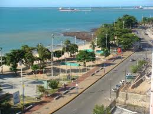

O que temos de bom no Ceará
Passear na beira mar
A Beira Mar em Fortaleza é um famoso calçadão à beira-mar, conhecido por sua vibrante atmosfera. Repleto de barracas de comida, artesanato local e apresentações culturais, é um destino popular para moradores e turistas. Além disso, suas belas praias e o pôr do sol deslumbrante tornam-no um local imperdível na capital cearense.
A capital cearense sempre tem assunto pra você: Twitter
Barracas na orla

Na Beira Mar de Fortaleza, as barracas oferecem uma variedade de comidas típicas cearenses, como tapioca e camarão. Além disso, as atrações incluem apresentações de música ao vivo, artesanato local e uma vista deslumbrante do oceano Atlântico.
Veja as melhores opções : Guia visita fortaleza
Mercado dos peixes

O Mercado dos Peixes de Fortaleza é um ponto imperdível para os amantes de frutos do mar, oferecendo uma variedade fresca de peixes e frutos do mar para compra. Localizado próximo à praia, os visitantes podem escolher os frutos do mar frescos e tê-los preparados nas barracas ao redor.
Veja como chegar : mapa
E existem muitos outros lugares interessante na cidade....
- Praia do Futuro
- Mercado Central
- Parque Ecológico do Cocó
- Centro Dragão do Mar de Arte e Cultura
- E mais
Desenvolvido por:
Ricardo Vieira